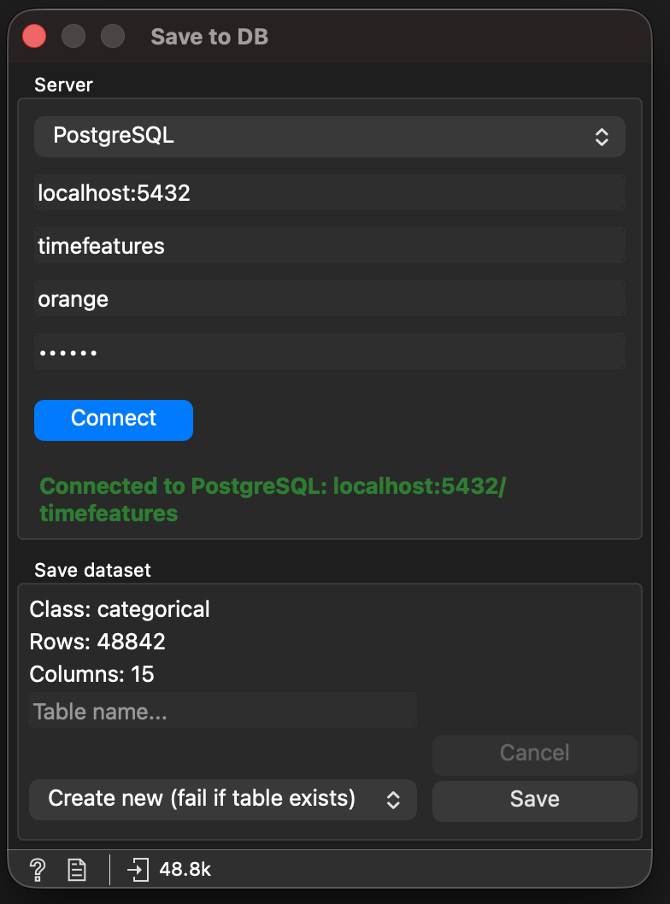

Save to DB¶
The Save to DB widget persists an Orange data table to a SQL database. Two dialects are supported out of the box:
PostgreSQL — through
psycopg2.MySQL — through
pymysql.

The Save to DB widget.¶
Both drivers are reached via SQLAlchemy, which keeps the SQL
generation, identifier quoting and type rendering dialect-agnostic. The
actual upload uses a pandas DataFrame
and DataFrame.to_sql with method='multi' and chunked writes, so
a 100 000-row dataset finishes in seconds even on remote hosts (the
previous row-by-row INSERT would have taken minutes).
Inputs¶
Signal |
Type |
Description |
|---|---|---|
Data |
|
The dataset to upload. |
Outputs¶
This widget has no output signals — it is a pipeline sink.
Controls¶
The widget shows the detected target type, row count and column count of the input. Connection fields (host, port, database, user, password) come from Orange’s SQL base widget.
TimeFeatures-specific controls:
Field |
Description |
|---|---|
Database type |
Combo box at the top of the connection box. Pick PostgreSQL or MySQL. The connection driver and column types adapt automatically. |
Connection status |
Small label under the connection box. Shows three states: neutral (“Not connected”, “Connecting…”, “Uploading rows 3/10…”), success (“Connected to PostgreSQL: host/db”, “Upload completed in 4.2s”), error (“Connection failed: …”, “Upload failed: …”). |
Table name |
Destination table name. Validated against PostgreSQL identifier rules (see Validation below); MySQL accepts a superset, so the same rule is safe on both. |
Mode |
Combo between the Table name and the Email fields:
|
Optional notification address. A summary email is sent once the upload finishes, including the table name, row / column counts, and elapsed time. |
How it Works¶
When Save is clicked, the widget:
Validates the table name and the form (host, database, optional email).
Builds a SQLAlchemy URL from the form fields and the active dialect driver (
postgresql+psycopg2://…ormysql+pymysql://…).Spawns a background
QThreadrunning an_UploadWorker, so the Orange canvas stays responsive even during long uploads.The worker:
converts the dataset to a pandas DataFrame with
Orange.data.pandas_compat.table_to_frame(include_metas=True)and reorders the columns (class first, then metas in domain order, then attributes) to match the existing schema convention;ensures the
datasetsmetadata table exists;applies the mode-specific preparation:
create — fail fast if a
datasetsrow with this name already exists.overwrite —
DROP TABLE IF EXISTSon the target plusDELETEof the matchingdatasetsrow.append — leave everything in place; the upload itself will create the table on the first chunk if it doesn’t exist.
writes the dataset in
PANDAS_SQL_CHUNKSIZEchunks (default1 000) viadf.to_sql(..., method='multi')with theif_existsvalue tailored to the mode (see_pandas_if_existsfor the exact table);runs
SELECT COUNT(*)on the target table and re-inserts thedatasetsrow with that real row count, so the registry stays consistent even after multiple appends.
Everything happens inside a single SQLAlchemy transaction
(engine.begin()), so a mid-upload error rolls every step back on
PostgreSQL. MySQL auto-commits DDL (DROP TABLE, CREATE TABLE),
so an Overwrite that crashes during the upload may leave you without
the original table — there’s no way around that without engine-level
support.
While the worker runs, the widget’s progress bar and status label are updated through Qt signals; the Save, Connect and form controls are temporarily disabled.
Type Mapping¶
Column types are picked per dialect through SQLAlchemy so the DDL is
correct on either backend. The widget uses the dialect-specific
DOUBLE_PRECISION / DOUBLE whenever available:
Orange Variable |
PostgreSQL |
MySQL |
|---|---|---|
|
|
|
|
|
|
|
|
|
|
|
|
Identifiers (table and column names) are quoted by SQLAlchemy with the
dialect’s native syntax — "name" on PostgreSQL,
\`name\` on MySQL — and any internal occurrence of the quote
character is doubled to avoid breakouts.
Validation¶
Before touching the database the widget enforces:
Connection established — a successful Connect is required; if you click Save before connecting, the widget refuses with Connect to a database before saving.
Table name present — required.
Table name well-formed — must match
^[A-Za-z_][A-Za-z0-9_]{0,62}$(PostgreSQL identifier rules: starts with a letter or underscore, only letters / digits / underscores, max 63 characters). MySQL accepts a superset.Connection fields present — host and database.
Email well-formed — only when the optional field is filled.
Security¶
The widget defends against SQL injection at three layers:
Parametrised queries — every value inserted into the database goes through SQLAlchemy parameter binding (
connection.execute(text(...), params)for the metadata row,DataFrame.to_sqlfor the data). Values are never concatenated into the SQL string.Identifier escaping — table and column identifiers are rendered by the SQLAlchemy dialect, which double-escapes the quote character per spec (
"on PostgreSQL,\`on MySQL).Whitelist on the table name — the regex above further blocks payloads from ever reaching the DDL stage.
Usage Example¶
Connect a File widget (or any data-producing widget) to Save to DB.
Choose PostgreSQL or MySQL in the Database type combo.
Fill in the connection fields (host, database, username, password).
Click Connect. The status label should turn green with the connection details.
Enter a valid table name, e.g.
my_time_series_data.(Optional) Enter an email for the completion notification.
Click Save. Watch the progress bar advance through the chunks and the status label switch to Upload completed in Xs when done.
Requirements¶
The widget brings the database drivers and the SQL toolkit:
SQLAlchemy>=1.4.0 # dialect-agnostic SQL toolkit
psycopg2-binary>=2.9.9 # PostgreSQL driver
PyMySQL>=1.0.0 # MySQL driver
psycopg2-binary is the binary distribution, so the widget runs on
macOS, Linux and Windows without a C compiler or the libpq
development headers. PyMySQL is pure Python and has no native
build step. pandas itself is already a transitive dependency of
Orange3.